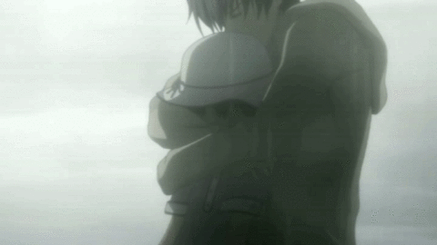

"Steins;Gate" is an exhilarating experience due to its intricate blend of science fiction, mystery, and emotional depth. The narrative's focus on time travel, with its complex and often unpredictable consequences, keeps viewers on the edge of their seats. Each episode reveals new layers of the story, combining moments of intense suspense with mind-bending plot twists that challenge the understanding of reality. The characters, led by the eccentric and charismatic Rintarou Okabe, are richly developed, and their relationships add a heartfelt dimension to the high-stakes drama. The tension between the pursuit of scientific discovery and the ethical dilemmas it presents creates a compelling conflict, making "Steins;Gate" not just a thrilling watch, but a thought-provoking journey that leaves a lasting impact.
My Favourite Scene in the series

The scene where Mayuri gazes at the sun and Okabe hugs her from behind in "Steins;Gate" stands out as the best scene because of its profound emotional resonance and symbolic significance. This tender moment encapsulates the deep bond between the two characters, highlighting Okabe's protective nature and his determination to keep Mayuri safe despite the harrowing challenges they face. The serene yet poignant atmosphere of the scene, with the warm sunlight and the gentle embrace, contrasts sharply with the intense turmoil of their journey, providing a brief but powerful respite. This scene beautifully illustrates the themes of love, sacrifice, and the fragile nature of time, making it a pivotal and unforgettable moment in the series that deeply touches the hearts of viewers.